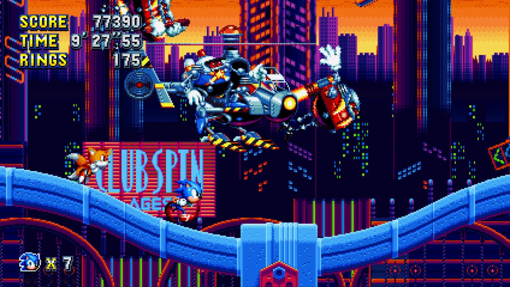
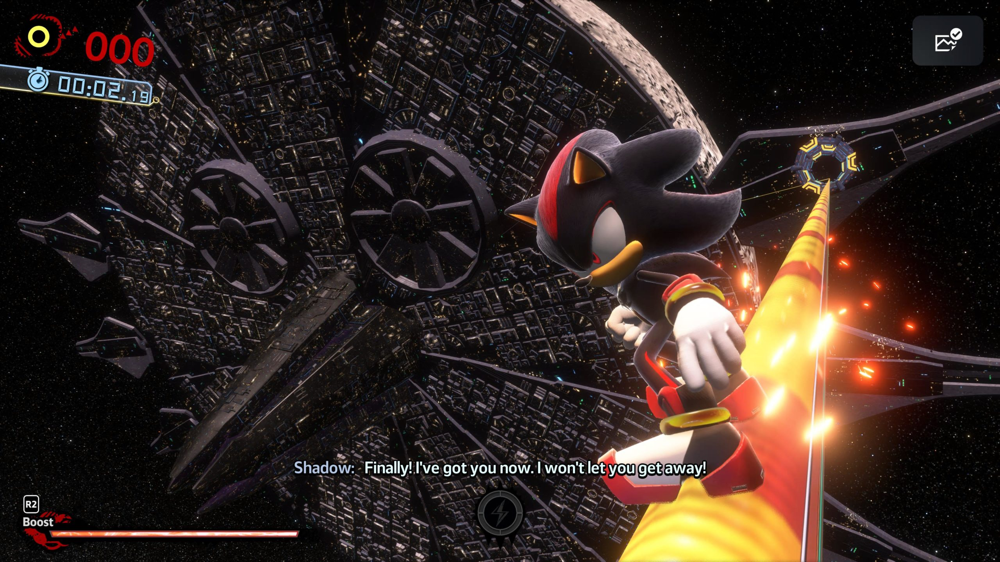
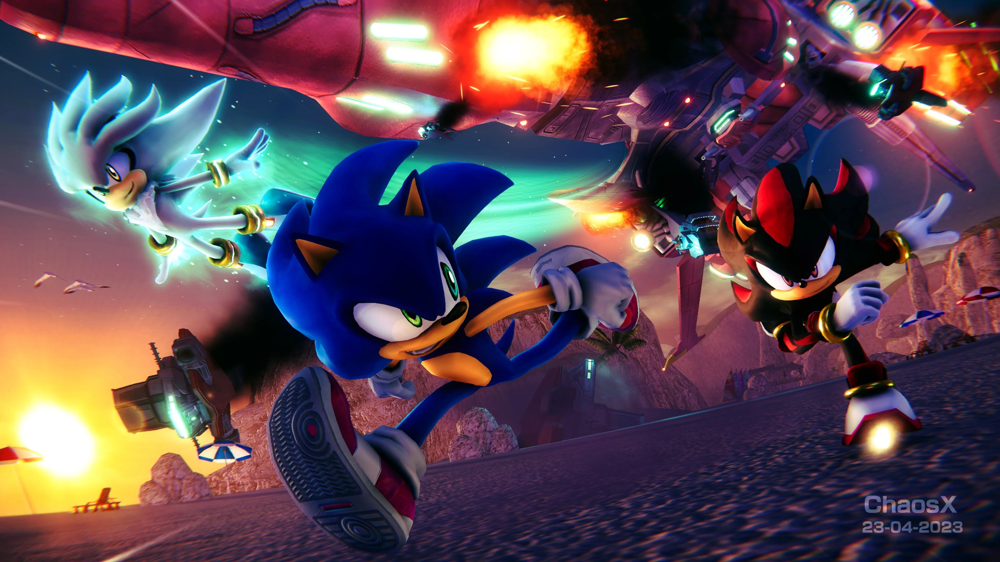

Sonic Mania

A love letter to the classic 2D Sonic games, mixing remixed old zones with brand-new ones and pixel-perfect speed.
Read about Sonic ManiaSonic X Shadow Generations

A polished remaster of Sonic Generations paired with a brand-new campaign starring Shadow the Hedgehog.
Read about Shadow GenerationsProject '06

A fan-made reimagining of Sonic the Hedgehog (2006) that tries to fix what held the original back.
Read about Project '06